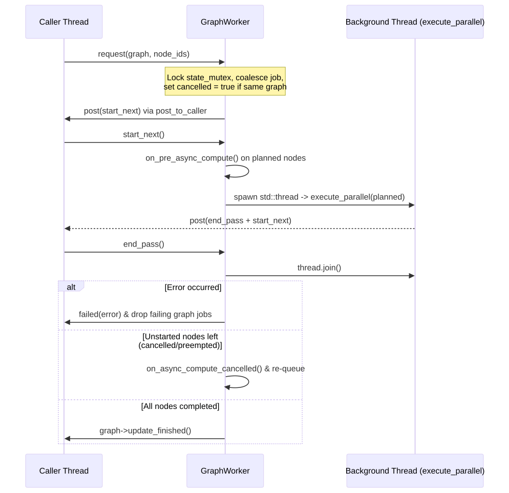

GNode supports three update execution modes depending on whether evaluation is synchronous, deferred/debounced on a background thread, or parallelized across independent DAG branches.
1. Sequential Update (Graph::update)
In sequential mode, Graph::update() executes synchronously on the calling thread:
- Validation & Ordering: Validates requested node IDs and computes a topological order (topological_sort for full updates, or get_nodes_to_update for selective updates). Throws std::runtime_error if a cycle is detected.
- Sequential Evaluation: Iterates through the sorted nodes one by one, checking cancel_update_callback(nid) before each node->update().
- Completion: Fires graph->update_finished() once all scheduled nodes complete.

(Source: sequential_update.mmd)
2. Deferred Update with GraphWorker
GraphWorker (GNode/include/gnode/graph_worker.hpp, GNode/src/graph_worker.cpp) orchestrates non-blocking, debounced background updates:
- Request & Coalescing: GraphWorker::request(graph, node_ids) acquires state_mutex, coalesces dirty node IDs into the pending Job for that graph, and sets cancelled = true if that graph is currently mid-pass.
- Pre-Compute Snapshot: On the caller thread, start_next() calls on_pre_async_compute() on all planned nodes before spawning the background std::thread.
- Background Execution & Resumption: The background thread runs graph->execute_parallel(planned). When it finishes (or is cancelled), it posts end_pass() back to the caller thread via post_to_caller:
- Error: Drops only the failing graph's queued jobs and invokes failed(error).
- Preempted / Cancelled: Calls on_async_compute_cancelled() on unstarted nodes and re-queues them with any newly requested nodes.
- Completed: Fires graph->update_finished().
- Synchronous Flush: GraphWorker::finish() stops background work and drains remaining queued jobs synchronously, cleaning up is_finishing and cancel_update_callback even if a node throws.

(Source: deferred_update_graph_worker.mmd)
3. Async Update with Parallel Graph Branch Execution (Graph::execute_parallel)
Graph::execute_parallel(dirty_node_ids, num_threads) (GNode/src/graph.cpp) parallelizes independent DAG branches using a ThreadPool (GNode/include/gnode/thread_pool.hpp):
- Cycle Check & In-Degree Graph: Runs topological_sort(dirty_node_ids) to verify acyclicity, then builds atomic in_degree[nid] counters and dirty_dw[nid] adjacency lists restricted to the dirty set.
- Root Scheduling: All nodes with in_degree == 0 are enqueued immediately via ThreadPool::enqueue_detached().
- Dynamic Fan-Out / Fan-In: When a node finishes node->update(), it atomically decrements in_degree[dw_id] for each downstream dirty node. Whichever upstream branch decrements in_degree from 1 to 0 enqueues dw_id.
- Cancellation & Error Handling:
- Before executing or enqueuing, cancelled.load() and cancel_update_callback(nid) are checked.
- If any node throws, the first exception is captured, cancelled is set to true, sync_cv is notified, pool.stop_and_join() waits for active workers, and the exception is rethrown.

(Source: async_parallel_update.mmd)
 1.15.0
1.15.0